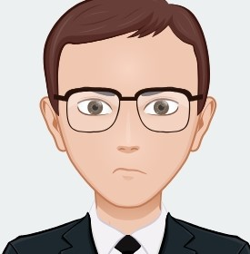

Descubra o ínicio de uma modificação
atual nas terras do continente africano!
Evolução
Divisão continental:
300 milhões de anos atrás
Pangeia
Foi um supercontinente que uniu e todas as massas
terrestres da Terra e era cercada por um vasto oceano chamado Pantalassa.
180 milhões de anos atrás
Gondwana
Algumas terras foram se separando e dando origem aos continentes
atuais: América do Sul, África, Índia, Austrália (na Oceania) e as ilhas do Pacífico
Sul. Houve também a formação do mar Tetis.
150 - 100 milhões de anos atrás
Laurásia
Deu origem à América do Norte e à Eurásia (Europa e Ásia). Houve a
formação do Oceano Atlântico Norte.
60 milhões de anos - atualidade
Continentes atuais
DIvisão continental tal como conhecemos hoje, com os continentes:
América, Europa, África, Ásia, Oceania e Antártida. Também houve a formação dos
seguintes oceanos: Pacífico, Atlântico, Índico, Glacial Ártico e Glacial Antártico.
Próximas
mudanças?
Nossa equipe
Conheça os desenvolvedores!
Lara

Arthur
Kauan
Brenno
Contate-nos!
Nós precisamos de sua opinião!
Placas existentes
Conheça as principais placas tectônicas!
Existem sete principais placas tectônicas, sendo elas: Placa Africana, Placa
Antártica, Placa
Australiana, Placa Eurasiática, Placa do Pacífico, Placa Norte-americana e Placa
Sul-americana.
Além disso, há outras placas menores, como a Placa de Nazca, Placa de Scotia, Placa
Juan de Fuca, Placa Indiana e Placa das Filipinas.
Como são formadas?
Descubra como essas placas se formam!
As placas tectônicas são formadas pela fragmentação da litosfera, a camada mais
externa e rígida da Terra. Esse processo é influenciado pelo calor do interior da
Terra e pelas forças dinâmicas que agem sobre o manto, ou seja, o manto está em
constante movimento por conta do calor vindo do núcleo da Terra, o que faz com que
ocorra tensões na litosfera, resultando na formação de rachaduras, fragmentando-a em
grandes blocos rígidos, que são as placas tectônicas.
Atividade Vulcânica
Descubra sua relação com as placas tectônicas!
A atividade vulcânica envolve a erupção de magma, gases e outros materiais do
interior da Terra para a superfície, ocorrendo principalmente através dos vulcões,
que são aberturas na crosta terrestre. Quando o magma é expelido, ele se transforma
em lava, que flui ou explode dessas aberturas, criando formações geológicas como
cones vulcânicos, planaltos de lava e caldeiras. A atividade vulcânica pode ser
classificada em explosiva, quando o magma é viscoso e rico em gases, acumulando
pressão até explodir, e em efusiva, quando a lava é fluida e flui tranquilamente
pela superfície.
As placas tectônicas são grandes blocos que compõem a litosfera terrestre e flutuam
sobre o manto, uma camada parcialmente fluida. Elas estão em constante movimento,
devido às correntes de convecção no manto, o que resulta em interações ao longo das
bordas dessas placas. Essas interações incluem a divergência, onde as placas se
afastam; a convergência, onde colidem e uma é forçada para baixo da outra; e a
transformação, onde as placas deslizam lateralmente uma em relação à outra.
Nas zonas de divergência, onde as placas se afastam, o magma do manto sobe para
preencher a lacuna, o que gera vulcanismo, especialmente nas dorsais oceânicas. A
maioria dessas erupções ocorre debaixo d'água e resulta em lava que esfria
rapidamente, formando estruturas chamadas "almofadas de lava". Já nas zonas de
convergência, uma placa oceânica é forçada para baixo de uma placa continental ou
outra placa oceânica. Durante a subducção, a placa subduzida derrete parcialmente,
gerando magma que sobe para a superfície e forma vulcões explosivos, como os
encontrados no Cinturão de Fogo do Pacífico.
Nem toda atividade vulcânica está relacionada diretamente aos limites das placas
tectônicas. Em áreas chamadas de pontos quentes, o magma sobe diretamente do manto
profundo, formando cadeias de vulcões conforme as placas tectônicas se movem sobre
esses pontos fixos, como ocorre no Havaí. Nas falhas transformantes, onde as placas
deslizam lateralmente, a atividade vulcânica é rara, e o movimento tectônico se
manifesta mais em terremotos, como na Falha de San Andreas.
Os tipos de vulcões variam conforme a atividade tectônica. Em zonas de divergência e
pontos quentes, os vulcões escudo são comuns, com erupções efusivas de lava fluida,
criando montanhas com declives suaves, como o Mauna Loa no Havaí. Em zonas de
subducção, os estratovulcões são mais comuns, com camadas de lava e cinzas de
erupções anteriores, gerando vulcões explosivos e perigosos, como o Monte Santa
Helena nos EUA. Já os vulcões de cinzas são menores e formados por erupções
explosivas que lançam fragmentos sólidos, sendo comuns tanto em zonas de subducção
quanto em pontos quentes.
A atividade vulcânica tem impactos locais e globais. Localmente, fluxos de lava,
nuvens de cinzas e explosões podem destruir cidades, florestas e causar mortes, mas
também podem criar solos férteis. Globalmente, grandes erupções podem liberar
partículas na atmosfera que refletem a luz solar, causando esfriamento temporário no
clima, como aconteceu após a erupção do Monte Pinatubo em 1991.
A atividade vulcânica está diretamente relacionada ao movimento das placas
tectônicas. As interações entre as placas nas zonas de divergência, convergência e
nos pontos quentes são as principais causas do vulcanismo no planeta, moldando tanto
a superfície da Terra quanto influenciando o clima e a vida ao longo do tempo.
Formação de Montanhas
Descubra como estão ligadas diretamente as placas
tectônicas!
O movimento tectônico é responsável pela disposição atual dos continentes e oceanos.
Durante o período Paleozoico e Mesozoico, todos os continentes estavam unidos em uma
única massa terrestre chamada Pangeia. Com o movimento das placas ao longo de
milhões de anos, Pangeia se fragmentou, criando os continentes que conhecemos
hoje. (SpringerLink)
(National Geographic Society)
Esse processo de separação continua em andamento, com os continentes ainda se
movendo. A África, por exemplo, está se dividindo lentamente ao longo do Rift do
Leste Africano, um sistema de falhas geológicas que eventualmente pode criar um novo
oceano.
A expansão do fundo oceânico nas dorsais oceânicas também desempenha um papel
crucial. Nas dorsais meso-oceânicas, como a que atravessa o Atlântico, a crosta
oceânica se expande à medida que o magma sobe das profundezas do manto e resfria,
criando novas rochas. Esse processo está causando a expansão do Atlântico, enquanto
o Oceano Pacífico está diminuindo, devido à subducção de suas margens sob as placas
continentais circundantes
(National
Geographic Society)
Outro ponto interessante é o impacto do movimento tectônico sobre os ecossistemas. À
medida que os continentes se afastam ou colidem, as mudanças na topografia e nos
padrões climáticos forçam as espécies a se adaptarem ou migrarem, influenciando
diretamente a evolução da vida no planeta.
Regiões populosas
Descubra como as placas impactam nessas regiões!
Os impactos das placas tectônicas em regiões populosas podem ser devastadores,
afetando diretamente as vidas de milhões de pessoas que vivem em áreas próximas aos
limites dessas placas. As consequências mais comuns incluem terremotos, erupções
vulcânicas, tsunamis e mudanças no relevo, que podem resultar em destruição massiva
de infraestrutura, perda de vidas e danos ambientais.
Quando as placas tectônicas se movimentam, grandes quantidades de energia são
liberadas, especialmente ao longo das fronteiras dessas placas. Em regiões de
convergência, onde duas placas colidem, os terremotos são uma ameaça constante. O
choque entre as placas libera energia em forma de ondas sísmicas que viajam pela
crosta terrestre, causando abalos de diferentes intensidades. Quanto mais forte o
terremoto, maiores são os danos nas áreas urbanas, onde edifícios, estradas e pontes
podem desmoronar, levando a sérios prejuízos econômicos e a uma significativa perda
de vidas.
Além dos terremotos, regiões que estão próximas a vulcões, frequentemente
localizadas em zonas de subducção, são vulneráveis a erupções vulcânicas. Quando o
magma sobe à superfície, pode causar explosões violentas, liberando lava, gases
tóxicos e cinzas que cobrem grandes áreas. As erupções podem destruir comunidades
inteiras, impactando as atividades humanas, além de causar problemas respiratórios e
poluição atmosférica. Outro efeito catastrófico associado às placas tectônicas é o
tsunami, que é gerado quando um grande terremoto ocorre no fundo do oceano. As ondas
gigantes que resultam podem atingir áreas costeiras densamente povoadas, causando
inundações, perda de vidas e destruição de propriedades.
Um exemplo real e trágico do impacto das placas tectônicas em uma região populosa é
o terremoto que atingiu o Japão em 11 de março de 2011. Esse terremoto, conhecido
como o Grande Terremoto do Tohoku, teve uma magnitude de 9,0 e foi causado pelo
movimento de subducção da Placa do Pacífico sob a Placa Norte-Americana. O tremor
gerou um enorme tsunami, com ondas de até 40 metros de altura, que devastou áreas
costeiras. Mais de 15.000 pessoas perderam a vida, e milhares de outras ficaram
desabrigadas. Além disso, o tsunami desencadeou um desastre nuclear na usina de
Fukushima, com vazamentos radioativos que tiveram repercussões globais.
Esse acontecimento mostrou o quão vulneráveis as regiões densamente povoadas podem
ser aos impactos das placas tectônicas. Mesmo em um país preparado como o Japão, com
infraestrutura avançada e sistemas de alerta precoce, os danos foram imensos,
destacando a magnitude das forças naturais envolvidas. As placas tectônicas
continuam a moldar a Terra e, infelizmente, as regiões que se encontram sobre essas
zonas de atividade tectônica permanecem sob constante risco de eventos destrutivos.
Chifre da África
Descubra o ínicio de uma modificação atual nas terras
do continente africano!
O Chifre da África, que inclui países como Somália, Etiópia e Djibuti, está
localizado em uma área de intensa atividade tectônica. Ele faz parte do Vale do
Rift, onde a Placa Africana está se dividindo em duas: a Placa Núbia e a Placa
Somali. Esse processo, chamado de rifteamento continental, está lentamente separando
o Chifre da África do restante do continente.
Essa atividade tectônica gera terremotos e vulcanismo na região, especialmente na
Depressão de Afar, onde a crosta terrestre está se esticando e afinando. Embora os
terremotos sejam geralmente pequenos, eles indicam a constante movimentação das
placas. Além disso, vulcões ativos são comuns, mostrando como o magma pode atingir a
superfície devido a essa separação.
No longo prazo, o Chifre da África poderá se tornar uma massa de terra separada,
formando um novo oceano entre ele e o resto da África. Esse processo afeta tanto o
ambiente quanto as populações locais, que já enfrentam desafios sociais e
climáticos, agora agravados pela atividade geológica da região.